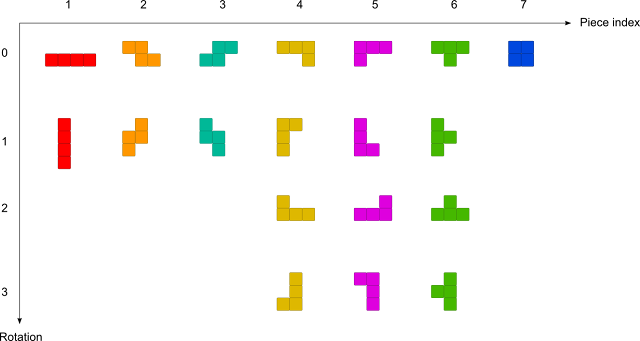

Tengstrand's Blog
The search for simpler code while having fun.
The search for simpler code while having fun.

In this blog series, I will show how to work with the Polylith architecture and how organizing code into components helps create a good structure for high-level functional style programming.
You might feel that organizing into components is unnecessary, and yes, for a tiny codebase like this I would agree. It's still easy to reason about the code and keep everything in mind, but as the codebase grows, so does the value of this structure, in terms of better overview, clearer system boundaries, and increased flexibility in how these building blocks can be combined into various systems.
We will get familiar with this by implementing a self-playing Tetris program in Clojure and Python while reflecting on the differences between the two languages.
The task for this first post is to place a T piece on a Tetris board (represented by a two-dimensional array):
[[0,0,0,0,0,0,0,0,0,0]
[0,0,0,0,0,0,0,0,0,0]
[0,0,0,0,0,0,0,0,0,0]
[0,0,0,0,0,0,0,0,0,0]
[0,0,0,0,0,0,0,0,0,0]
[0,0,0,0,0,0,0,0,0,0]
[0,0,0,0,0,0,0,0,0,0]
[0,0,0,0,0,0,0,0,0,0]
[0,0,0,0,0,0,0,0,0,0]
[0,0,0,0,0,0,0,0,0,0]
[0,0,0,0,0,0,0,0,0,0]
[0,0,0,0,0,0,0,0,0,0]
[0,0,0,0,0,0,0,0,0,0]
[0,0,0,0,0,0,T,0,0,0]
[0,0,0,0,0,T,T,T,0,0]]
We will put the code in the piece and board components in a Polylith workspace (output from the info command):
This will not be a complete guide to Polylith, Clojure, or Python, but I will explain the most important parts and refer to relevant documentation when needed.
The resulting source code from this first blog post in the series can be found here:
We begin by installing the poly command line tool for Clojure, which we will use when working with the Polylith codebase:
brew install polyfy/polylith/poly
The next step is to create a Polylith workspace:
poly create workspace name:tetris-polylith top-ns:tetrisanalyzer
We now have a standard Polylith workspace for Clojure in place:
▾ tetris-polylith
▸ bases
▸ components
▸ development
▸ projects
deps.edn
workspace.edn
We will use uv as package manager for Python (see setup for other alternatives). First we install uv:
curl -LsSf https://astral.sh/uv/install.sh | sh
Then we create the tetris-polylith-uv workspace directory, by executing:
uv init tetris-polylith-uv
cd tetris-polylith-uv
uv add polylith-cli --dev
uv sync
which creates:
README.md
main.py
pyproject.toml
uv.lock
Finally we create the standard Polylith workspace structure:
uv run poly create workspace --name tetrisanalyzer --theme loose
which adds:
▾ tetris-polylith-uv
▸ bases
▸ components
▸ development
▸ projects
workspace.toml
The workspace requires some additional manual steps, documented here.
Now we are ready to create our first component for the Clojure codebase:
poly create component name:piece
This adds the piece component to the workspace structure:
▾ components
▾ piece
▾ src
▾ tetrisanalyzer
▾ piece
interface.clj
core.clj
▾ test
▾ tetrisanalyzer
▾ piece
interface-test.clj
If you have used Polylith with Clojure before, you know that you also need to manually add piece to deps.edn, which is described here.
Let's do the same for Python:
uv run poly create component --name piece
This adds the piece component to the structure:
▾ components
▾ tetrisanalyzer
▾ piece
__init__.py
core.py
▾ test
▾ components
▾ tetrisanalyzer
▾ piece
__init__.py
test_core.py
In Tetris, there are 7 different pieces that can be rotated, summing up to 19 shapes:
Here we will store them in a multi-dimensional array where each possible piece shape is made up of four [x,y] cells, with [0,0] representing the upper left corner.
For example the Z piece in its inital position (rotation 0) consists of the cells [0,0] [1,0] [1,1] [2,1]:
This is how it looks like in Clojure (commas are treated as white spaces in Clojure and are often omitted):
(ns tetrisanalyzer.piece.piece)
(def pieces [nil
;; I (1)
[[[0 0] [1 0] [2 0] [3 0]]
[[0 0] [0 1] [0 2] [0 3]]]
;; Z (2)
[[[0 0] [1 0] [1 1] [2 1]]
[[1 0] [0 1] [1 1] [0 2]]]
;; S (3)
[[[1 0] [2 0] [0 1] [1 1]]
[[0 0] [0 1] [1 1] [1 2]]]
;; J (4)
[[[0 0] [1 0] [2 0] [2 1]]
[[0 0] [1 0] [0 1] [0 2]]
[[0 0] [0 1] [1 1] [2 1]]
[[1 0] [1 1] [0 2] [1 2]]]
;; L (5)
[[[0 0] [1 0] [2 0] [0 1]]
[[0 0] [0 1] [0 2] [1 2]]
[[2 0] [0 1] [1 1] [2 1]]
[[0 0] [1 0] [1 1] [1 2]]]
;; T (6)
[[[0 0] [1 0] [2 0] [1 1]]
[[0 0] [0 1] [1 1] [0 2]]
[[1 0] [0 1] [1 1] [2 1]]
[[1 0] [0 1] [1 1] [1 2]]]
;; O (7)
[[[0 0] [1 0] [0 1] [1 1]]]])
Here is how it looks in Python:
pieces = [None,
# I (1)
[[[0, 0], [1, 0], [2, 0], [3, 0]],
[[0, 0], [0, 1], [0, 2], [0, 3]]],
# Z (2)
[[[0, 0], [1, 0], [1, 1], [2, 1]],
[[1, 0], [0, 1], [1, 1], [0, 2]]],
# S (3)
[[[1, 0], [2, 0], [0, 1], [1, 1]],
[[0, 0], [0, 1], [1, 1], [1, 2]]],
# J (4)
[[[0, 0], [1, 0], [2, 0], [2, 1]],
[[0, 0], [1, 0], [0, 1], [0, 2]],
[[0, 0], [0, 1], [1, 1], [2, 1]],
[[1, 0], [1, 1], [0, 2], [1, 2]]],
# L (5)
[[[0, 0], [1, 0], [2, 0], [0, 1]],
[[0, 0], [0, 1], [0, 2], [1, 2]],
[[2, 0], [0, 1], [1, 1], [2, 1]],
[[0, 0], [1, 0], [1, 1], [1, 2]]],
# T (6)
[[[0, 0], [1, 0], [2, 0], [1, 1]],
[[0, 0], [0, 1], [1, 1], [0, 2]],
[[1, 0], [0, 1], [1, 1], [2, 1]],
[[1, 0], [0, 1], [1, 1], [1, 2]]],
# O (7)
[[[0, 0], [1, 0], [0, 1], [1, 1]]]]
In Clojure we had to specify the namespace at the top of the file, but in Python, the namespace is implicitly given based on the directory hierarchy.
Here we put the above code in shape.py, and it will therefore automatically belong to the tetrisanalyzer.piece.shape module:
▾ tetris-polylith-uv
▾ components
▾ tetrisanalyzer
▾ piece
__init__.py
shape.py
In Polylith, only what's in the component's interface is exposed to the rest of the codebase.
In Python, we can optionally control what gets exposed in wildcard imports (from module import *) by defining the __all__ variable in the __init__.py module. However, even without __all__, all public names (those not starting with _) are still accessible through explicit imports.
This is how the piece interface in __init__.py looks like:
from tetrisanalyzer.piece.core import I, Z, S, J, L, T, O, piece
__all__ = ["I", "Z", "S", "J", "L", "T", "O", "piece"]
We could have put all the code directly in __init__.py, but it's a common pattern in Python to keep this module clean by delegating to implementation modules like core.py:
from tetrisanalyzer.piece import shape
I = 1
Z = 2
S = 3
J = 4
L = 5
T = 6
O = 7
def piece(p, rotation):
return shape.pieces[p][rotation]
The piece component now has these files:
▾ tetris-polylith-uv
▾ components
▾ tetrisanalyzer
▾ piece
__init__.py
core.py
shape.py
In Clojure, the interface is often just a single namespace with the name interface:
▾ components
▾ piece
▾ src
▾ tetrisanalyzer
▾ piece
interface.clj
Implemented like this:
(ns tetrisanalyzer.piece.interface
(:require [tetrisanalyzer.piece.shape :as shape]))
(def I 1)
(def Z 2)
(def S 3)
(def J 4)
(def L 5)
(def T 6)
(def O 7)
(defn piece [p rotation]
(get-in shape/pieces [p rotation]))
Let's see what differences there are in the two languages:
;; Clojure
(defn piece [p rotation]
(get-in shape/pieces [p rotation]))
# Python
def piece(p, rotation):
return shape.pieces[p][rotation]
An obvious difference here is that Clojure is a Lisp dialect, while Python uses a more traditional syntax. This means that if you want anything to happen in Clojure, you put it first in a list:
(defn piece ...)
(def piece (fn ...)) which defines the function piece(get-in shape/pieces [p rotation])
shape/pieces refers to the pieces vector in the shape namespace[p rotation] with two arguments:p is a value between 1 and 7, representing one of the pieces: I, Z, S, J, L, T, and Orotation is a value between 0 and 3, representing the number of 90-degree rotationsAnother significant difference is that data is immutable in Clojure, while in Python it's mutable (like the pieces data structure).
However, a similarity is that both languages are dynamically typed, but uses concrete types in the compiled code:
;; Clojure
(class \Z) ;; Returns java.lang.Character
(class 2) ;; Returns java.lang.Long
(class Z) ;; Returns java.lang.Long (since Z is bound to 2)
# Python
type('Z') # Returns <class 'str'> (characters are strings in Python)
type(2) # Returns <class 'int'>
type(Z) # Returns <class 'int'> (since Z is bound to 2)
The languages also share another feature: type information can be added optionally. In Clojure, this is done using type hints for Java interop and performance optimization. In Python, type hints (introduced in Python 3.5) can be added using the typing module, though they are not enforced at runtime and are primarily used for static type checking with tools like mypy.
Now let's continue by creating a board component:
poly create component name:board
Which adds the board component to the workspace:
▾ tetris-polylith
▸ bases
▾ components
▸ board
▸ piece
▸ development
▸ projects
And this is how we create a board component in Python:
uv run poly create component --name board
This adds the board component to the workspace:
▾ components
▾ tetrisanalyzer
▸ board
▸ piece
▾ test
▾ components
▾ tetrisanalyzer
▸ board
▸ piece
The Clojure code that places a piece on the board is implemented like this:
(ns tetrisanalyzer.board.core)
(defn empty-board [width height]
(vec (repeat height (vec (repeat width 0)))))
(defn set-cell [board p x y [cx cy]]
(assoc-in board [(+ y cy) (+ x cx)] p))
(defn set-piece [board p x y piece]
(reduce (fn [board cell]
(set-cell board p x y cell))
board
piece))
In Python (which uses two blank lines between functions by default):
def empty_board(width, height):
return [[0] * width for _ in range(height)]
def set_cell(board, p, x, y, cell):
cx, cy = cell
board[y + cy][x + cx] = p
def set_piece(board, p, x, y, piece):
for cell in piece:
set_cell(board, p, x, y, cell)
return board
Let's go through these functions.
(defn empty-board [width height]
(vec (repeat height (vec (repeat width 0)))))
To explain this function, we can break it down into smaller statements:
(defn empty-board [width height] ;; [4 2]
(let [row-list (repeat width 0) ;; (0 0 0 0)
row (vec row-list) ;; [0 0 0 0]
rows (repeat height row) ;; ([0 0 0 0] [0 0 0 0])
board (vec rows)] ;; [[0 0 0 0] [0 0 0 0]]
board))
We convert the lists to vectors using the vec function, so that we (later) can access it via index. Note that it is the last value in the function (board) that is returned.
def empty_board(width, height):
return [[0] * width for _ in range(height)]
This can be rewritten as:
def empty_board(width, height): # width = 4, height = 2
row = [0] * width # row = [0, 0, 0, 0]
rows = range(height) # rows = lazy sequence with the length of 2
board = [row for _ in rows] # board = [[0, 0, 0, 0], [0, 0, 0, 0]]
return board
The [row for _ in rows] statement is a list comprehension and is a way to create data structures in Python by looping.
We loop twice through range(height), which yields the values 0 and 1, but we're not interested in these values, so we use the _ placeholder.
(defn set-cell [board p x y [cx cy]]
(assoc-in board [(+ y cy) (+ x cx)] p))
Let's break it down into an alternative implementation and call it with:
board = [[0 0 0 0] [0 0 0 0]]
p = 6, x = 2, y = 0, cell = [0 1])
(defn set-cell [board p x y cell]
(let [[cx cy] cell ;; Destructures [0 1] into cx = 0, cy = 1
xx (+ x cx) ;; xx = 2 + 0 = 2
yy (+ y cy)] ;; yy = 0 + 1 = 1
(assoc-in board [yy xx] p))) ;; [[0 0 0 0] [0 0 6 0]]
In the original version, destructuring of [cx cy] happens directly in the function's parameter list. The assoc-in function works like board[y][x] in Python in this example, with the difference that it doesn't mutate, but instead returns a new immutable board.
def set_cell(board, p, x, y, cell):
cx, cy = cell
board[y + cy][x + cx] = p # [[0,0,0,0] [0,0,6,0]]
As mentioned earlier, this code mutates the two-dimensional list in place. It doesn't return anything, which differs from the Clojure version that returns a new board with one cell changed.
(defn set-piece [board p x y piece]
(reduce (fn [board cell]
(set-cell board p x y cell))
board ;; An empty board as initial value
piece)) ;; cells: [[1 0] [0 1] [1 1] [2 1]]
If you are new to reduce, think of it as a recursive function that processes each element in a collection, accumulating a result as it goes. The initial call to set-cell will use an empty board and the first [1 0] cell from piece, then use the returned board from set-cell and the second cell [0 1] from piece to call set-cell again, and continue like that until it has applied all cells in piece, where it returns a new board.
def set_piece(board, p, x, y, piece):
for cell in piece:
set_cell(board, p, x, y, cell)
return board
The Python version is pretty straight forward, with a for loop that mutates the board. We choose to return the board to make the function more flexible, allowing it to be used in expressions and enabling method chaining, which is a common Python pattern, even though the board is already mutated in place.
The test looks like this in Clojure:
(ns tetrisanalyzer.board.core-test
(:require [clojure.test :refer :all]
[tetrisanalyzer.piece.interface :as piece]
[tetrisanalyzer.board.core :as board]))
(def empty-board [[0 0 0 0 0 0 0 0 0 0]
[0 0 0 0 0 0 0 0 0 0]
[0 0 0 0 0 0 0 0 0 0]
[0 0 0 0 0 0 0 0 0 0]
[0 0 0 0 0 0 0 0 0 0]
[0 0 0 0 0 0 0 0 0 0]
[0 0 0 0 0 0 0 0 0 0]
[0 0 0 0 0 0 0 0 0 0]
[0 0 0 0 0 0 0 0 0 0]
[0 0 0 0 0 0 0 0 0 0]
[0 0 0 0 0 0 0 0 0 0]
[0 0 0 0 0 0 0 0 0 0]
[0 0 0 0 0 0 0 0 0 0]
[0 0 0 0 0 0 0 0 0 0]
[0 0 0 0 0 0 0 0 0 0]])
(deftest empty-board-test
(is (= empty-board
(board/empty-board 10 15))))
(deftest set-piece-test
(let [T piece/T
rotate-two-times 2
piece-t (piece/piece T rotate-two-times)
x 5
y 13]
(is (= [[0 0 0 0 0 0 0 0 0 0]
[0 0 0 0 0 0 0 0 0 0]
[0 0 0 0 0 0 0 0 0 0]
[0 0 0 0 0 0 0 0 0 0]
[0 0 0 0 0 0 0 0 0 0]
[0 0 0 0 0 0 0 0 0 0]
[0 0 0 0 0 0 0 0 0 0]
[0 0 0 0 0 0 0 0 0 0]
[0 0 0 0 0 0 0 0 0 0]
[0 0 0 0 0 0 0 0 0 0]
[0 0 0 0 0 0 0 0 0 0]
[0 0 0 0 0 0 0 0 0 0]
[0 0 0 0 0 0 0 0 0 0]
[0 0 0 0 0 0 T 0 0 0]
[0 0 0 0 0 T T T 0 0]]
(board/set-piece empty-board T x y piece-t)))))
Let's execute the tests to check that everything works as expected:
poly test :dev

The tests passed!
Now, let's add a Python test for the board:
from tetrisanalyzer import board, piece
empty_board = [
[0, 0, 0, 0, 0, 0, 0, 0, 0, 0],
[0, 0, 0, 0, 0, 0, 0, 0, 0, 0],
[0, 0, 0, 0, 0, 0, 0, 0, 0, 0],
[0, 0, 0, 0, 0, 0, 0, 0, 0, 0],
[0, 0, 0, 0, 0, 0, 0, 0, 0, 0],
[0, 0, 0, 0, 0, 0, 0, 0, 0, 0],
[0, 0, 0, 0, 0, 0, 0, 0, 0, 0],
[0, 0, 0, 0, 0, 0, 0, 0, 0, 0],
[0, 0, 0, 0, 0, 0, 0, 0, 0, 0],
[0, 0, 0, 0, 0, 0, 0, 0, 0, 0],
[0, 0, 0, 0, 0, 0, 0, 0, 0, 0],
[0, 0, 0, 0, 0, 0, 0, 0, 0, 0],
[0, 0, 0, 0, 0, 0, 0, 0, 0, 0],
[0, 0, 0, 0, 0, 0, 0, 0, 0, 0],
[0, 0, 0, 0, 0, 0, 0, 0, 0, 0],
]
def test_empty_board():
assert empty_board == board.empty_board(10, 15)
def test_set_piece():
T = piece.T
rotate_two_times = 2
piece_t = piece.piece(T, rotate_two_times)
x = 5
y = 13
expected = [
[0, 0, 0, 0, 0, 0, 0, 0, 0, 0],
[0, 0, 0, 0, 0, 0, 0, 0, 0, 0],
[0, 0, 0, 0, 0, 0, 0, 0, 0, 0],
[0, 0, 0, 0, 0, 0, 0, 0, 0, 0],
[0, 0, 0, 0, 0, 0, 0, 0, 0, 0],
[0, 0, 0, 0, 0, 0, 0, 0, 0, 0],
[0, 0, 0, 0, 0, 0, 0, 0, 0, 0],
[0, 0, 0, 0, 0, 0, 0, 0, 0, 0],
[0, 0, 0, 0, 0, 0, 0, 0, 0, 0],
[0, 0, 0, 0, 0, 0, 0, 0, 0, 0],
[0, 0, 0, 0, 0, 0, 0, 0, 0, 0],
[0, 0, 0, 0, 0, 0, 0, 0, 0, 0],
[0, 0, 0, 0, 0, 0, 0, 0, 0, 0],
[0, 0, 0, 0, 0, 0, T, 0, 0, 0],
[0, 0, 0, 0, 0, T, T, T, 0, 0],
]
assert expected == board.set_piece(empty_board, T, x, y, piece_t)
Let's install and run the tests using pytest:
uv add pytest --dev
And run the tests:
uv run pytest
With that, we have finished the first post in this blog series!
If you're eager to see a self-playing Tetris program, I happen to have made a couple in other languages that you can watch here.


Happy Coding!
Published: 2025-12-28